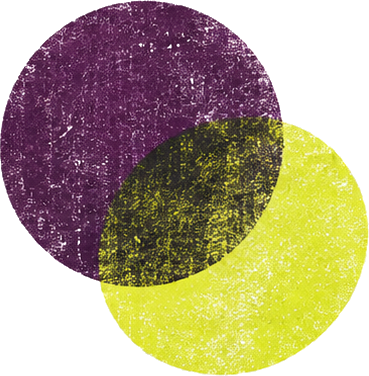
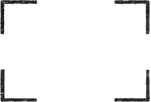
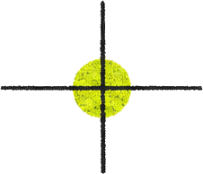
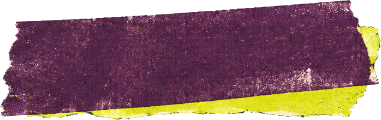
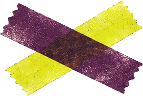
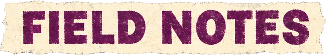

annaready.kr · design system · Stage 3 · 15 Nov 2026
Style guide
One press run: two inks on one sheet of paper, so the teaching work is the only full colour on the page. Every token below is defined in system.css.
Colour
Paper #F3EBDD
ground · 60
Paper deep #EADFCB
image mounts
Aubergine #492B51
headings, fields · 30
10.15:1
Text #37243C
running text
11.99:1
Muted #5E4566
meta, captions
7.04:1
Lime #D6DF66
chips, shadows, focus · 10
never text on paper
Type
Display · Zine Condensed 700
H2 · 36 → 84 px
H3 · 24 → 36 px
Lead · 17 → 20 px
Seven years in Korean public schools taught me what classrooms need.
Body · 16 px · 1.6
A workplace communication module where education staff revise messages for audience, tone, clarity, and purpose. Running text never exceeds 62 characters a line.
Label · 12 px floor
Korean
Same weight and size as English, never condensed. keep-all breaking, 1.75 line height.
주요 프로젝트
명확한 국제적 소통
교육 관계자가 독자, 어조, 명확성과 목적에 맞춰 업무 메시지를 수정하는 연수입니다.
Space
4
8
16
24
40
64
96
144
Sections are separated by 64–144 px of paper. Content column 1240 px, 12 columns, 24 px gutters.
Lines
Hairline · 1 px 45%
Strong · 2 px ink
Band · 8 px ink
Controls
Square, hard offset shadow, one press: the block slides into its shadow in 90 ms. Minimum target 44 px, 48 px on touch. Tab through them to see the focus ring.
Image mount
One frame per picture group. 4:3 plate on deep paper, 1 px ink border, 8–12 px padding. Samples keep their original colours.
Ornaments
From the riso asset bank. Hero: unlimited. Section headings: one each. Project entries: at most one. Never over a work sample, never within 16 px of text, never on buttons, forms or running text.






Motion
Press · 90 ms
Controls slide into their shadow.
Quick · 150 ms
Hover colour, underline weight.
Reveal · 320 ms
Sections rise 12 px and fade, once.
View · 400 ms max
Card to case study. Nothing longer.
One curve: cubic-bezier(.2, .7, .3, 1). No bounce, no parallax, no scroll-jacking. All of it off under reduced motion.
Do and don't
Do
- Paper, aubergine, lime. Nothing else in the chrome.
- One standout per screen, then space.
- Square corners, hard shadows, hairlines.
- Design Korean at the same weight as English.
- Show the real artefact, large, on one mount.
Don't
- Lime text on paper (1.21:1).
- Text under 12 px, or text at 45% ink.
- Rounded corners or blurred shadows.
- Condense, stretch or letter-space Hangul.
- Ornaments over work samples, or invented proof of any kind.